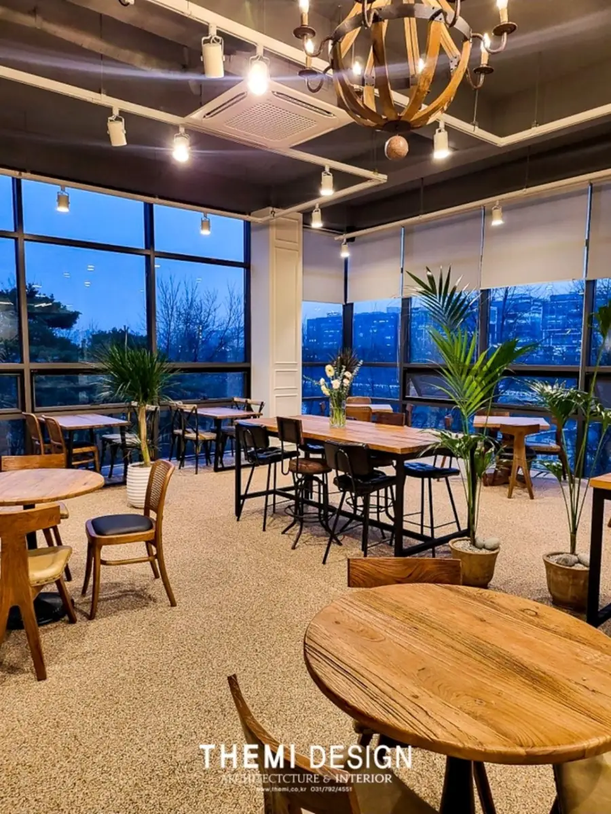

업종과 방문객 경험
고객이 어디서 들어오고 어떻게 이동하는지, 어떤 인상을 전달해야 하는지 정리합니다.
THEME / COMMERCIAL INTERIOR
보이는 인상과 매일의 운영 동선이 함께 고려되어야 공간이 오래 제 역할을 합니다.
하남 디자인더미(TheMi) 상업공간 인테리어 상담. 카페·매장·쇼룸·사무실·학원 등의 업종과 운영 동선, 공간 분위기, 공사 범위, 견적을 함께 검토합니다.
인테리어 상담 신청하기
COMMERCIAL PROJECT / PHOTO GALLERY
카운터부터 홀, 조명과 테라스까지. 공간의 분위기와 디테일을 만나보세요.
더 많은 시공 사례는 디자인더미 네이버 블로그에서 만나보세요.
OUR APPROACH
상업공간 인테리어는 주거공간과 달리 업종의 운영 방식, 고객 이동, 직원 작업 동선, 시설 조건 등을 고려해야 합니다.
고객이 어디서 들어오고 어떻게 이동하는지, 어떤 인상을 전달해야 하는지 정리합니다.
접객 공간과 업무 공간의 경계, 수납, 조리·제조·상담 등 업종별 동선을 검토합니다.
전기·급배수·환기·소방 등 공간의 현 상태와 관련 법규·허가 필요성을 확인하고 공사 범위를 상의합니다.
BUDGET & PROCESS
면적이 같아도 기존 건물 상태, 전력·급배수·환기, 간판 및 가구, 재료 선택, 영업 일정에 따라 공사 범위가 크게 달라집니다. 특히 법정 시설 기준과 인허가 사항은 업종별로 별도 확인이 필요합니다.
상담 계획 남기기 ↗FREQUENT QUESTIONS
카페·음식점, 매장·쇼룸, 사무실, 미용·뷰티, 학원·교육 공간 등 다양한 상업공간에 대한 상담을 접수합니다. 실제 수행 가능 범위는 상담 후 판단합니다.
영업 중 공사 가능 여부는 소음, 분진, 공정 위험, 건물 관리 규정과 작업 범위에 따라 달라집니다. 부분 휴업·전체 휴업 등 운영 조건을 함께 검토해야 합니다.
용도 변경, 소방, 위생, 표시 광고물 등 인허가 사항은 업종·건물에 따라 달라지며, 진행 범위는 개별 상담 및 계약에서 확인해야 합니다.
실제 견적·일정은 현장 상태와 공사 범위 확인 후 안내합니다.